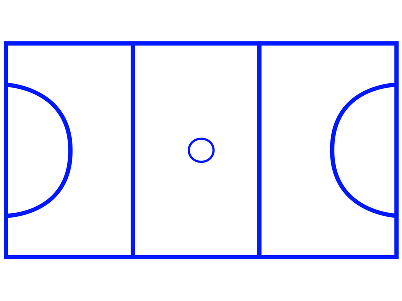

One of the most important things in Netball are the positions. A position is a role that have to play on the netball court. You can get up to four in one game. Here are some things they are important for:
Setting boundaries
Making sure that everyone gets a turn passing the ball down the court
ect..
Now, allow me to explain the positions and the boundaries of each one. :)
Attacking Positions + Center
I am going to need to take a look at this picture of the netball court as I refer to it a lot whilst I explain. Just so it's easier to explain, the left side is the attacking side. :D

Center (C)
Center is a wild position that alllows you run around the whole court exept you can't go in the half circels on the ends of the court. To have this Position you need a lot of stamina, as you are practicly runing around the whole time.
Wing Attack (WA)
WA is similar to Center, the difference is that wing attack can't go all over the court. They can only go in the center third and the attacking side.
Goal Attack (GA)
Goal attack is a shooting position, you will need a lot of accuracy to play it. GA is bassically the same as WA but you can go in the semicircle.
Goal Shooter (GS)
A gaol shooter is another position that you shoot in. Although you can only go in one third and the semicircle.
Defending Positions
Wing defence (WD)
Wing defence is literally the exact same as wing attack. The only difference is that wing defence is a defender and goes on the opposite side of the court. And instead of bringing the ball into the semicircle, they make sure that it doesn't go there. :)
Goal Defence
Goal defence is a positon that you will use to your advantage to make sure that goal attack and goal shooter do not score a goal. Normally you would put taller players in this position so they can catch the rebound easily. In GD you can go in middle third, defensive third and semi circle.
Goal Keeper (GK)
Goal keeper is bascally the same as goal defence, but they can only go in one third like goal shooter.